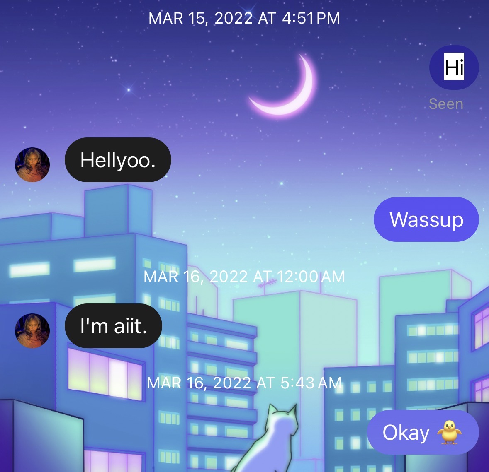
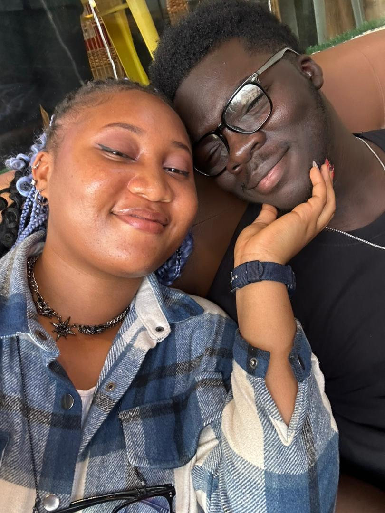
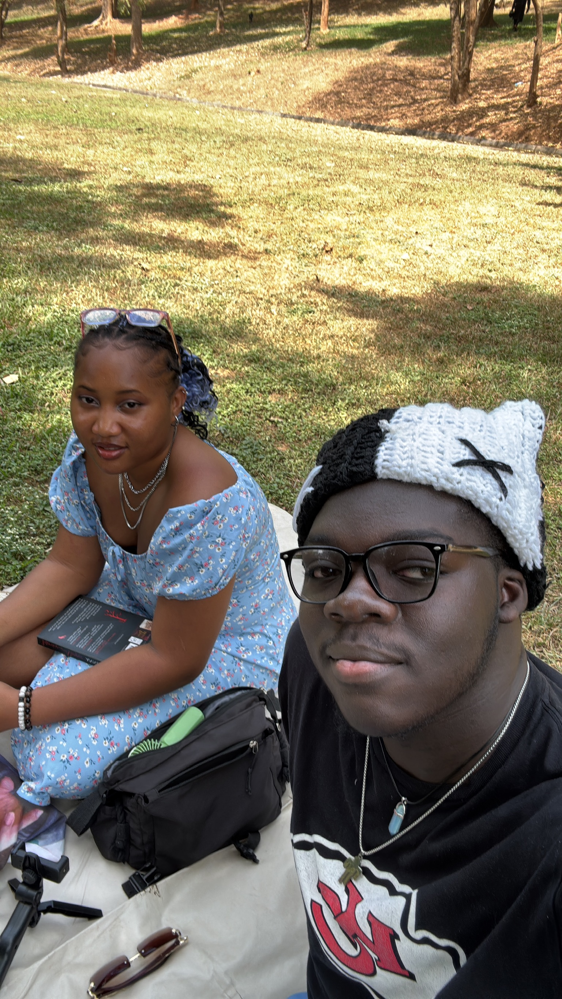
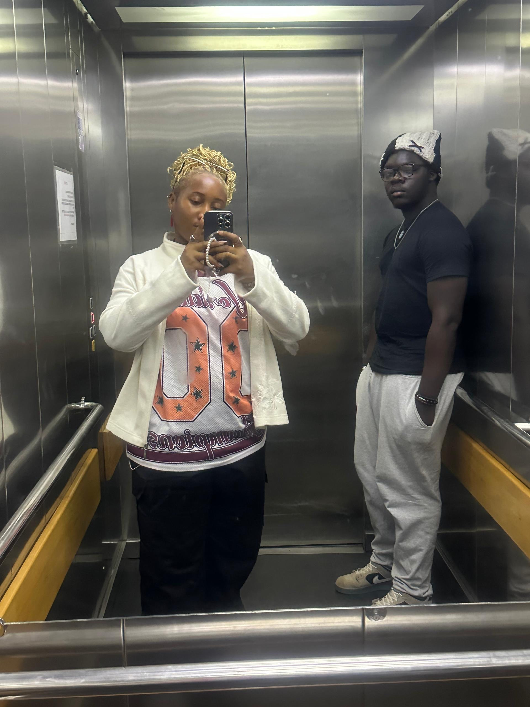
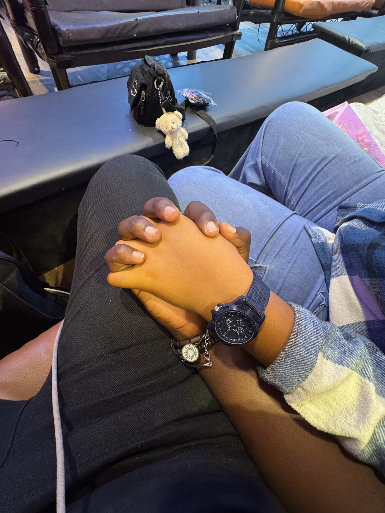
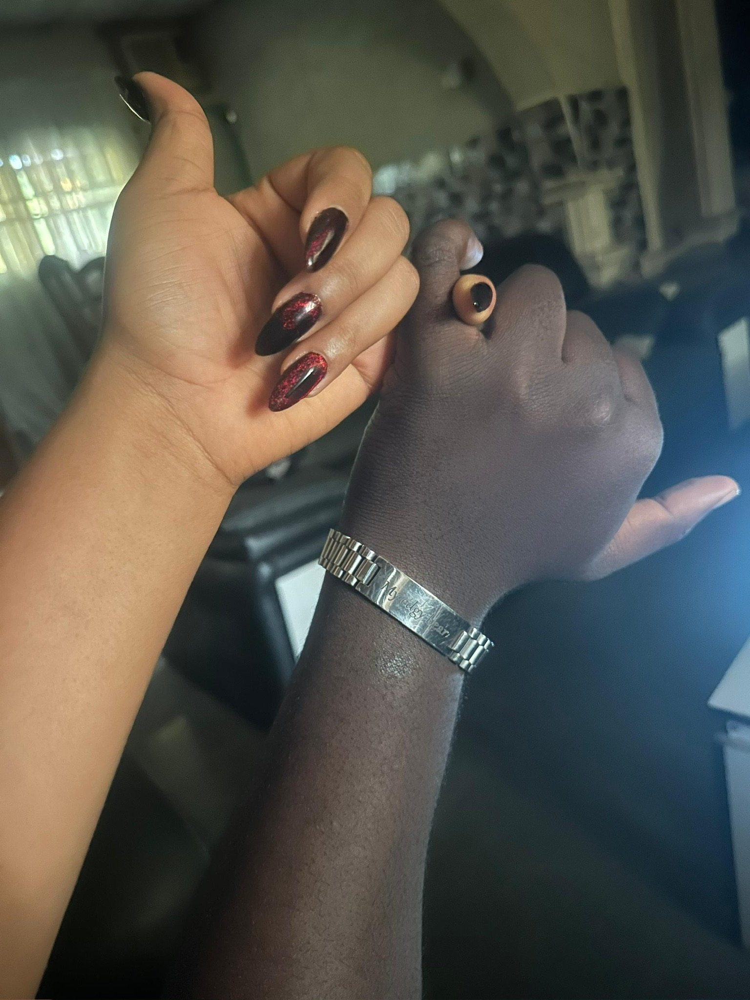

One year of choosing each other, every day.
Until April 7, 2026 · 12:00 AM (WAT)
Some things are worth waiting for. Everything beyond this point belongs to April 7th — and only April 7th. Come back when it's time.
It's time. Happy Anniversary, Sora. 🌹
April 7, 2026 · One Year
If someone had told me, a few years back, that I'd be writing you a one year anniversary letter... I'd have told them they had a future in stand-up comedy.
But here we are. A year. And somehow it already feels like forever.
Three years I carried you with me, quietly. Three years of knowing, somewhere I didn't say out loud, that you were different. That I couldn't see myself falling for anyone else. And then September 2024 came, and then April 7th came, and the universe finally caught up to what I already knew.
I wake up every day and I still have to remind myself... she's actually your girlfriend. She chose you. She loves you. I don't think that feeling will ever stop being the most extraordinary thing I've ever felt.
December was everything. A whole month of having you close enough to touch. I don't think I understood what I'd been missing until I had it...and I don't think I understood what losing it would feel like until January. Leaving you was the hardest thing... But I carry you with me everywhere I go.
You are the only person I trust and whom I love, above and beyond myself. All of my love belongs to you, you are its keeper.
Loving you has been the best experience ever.
Here's to many more years, Cara Mia. Here's to forever.

Our first conversation

First Date

My favourite moment with you

Forever my favourite person

Every moment with you is magic

A love like ours